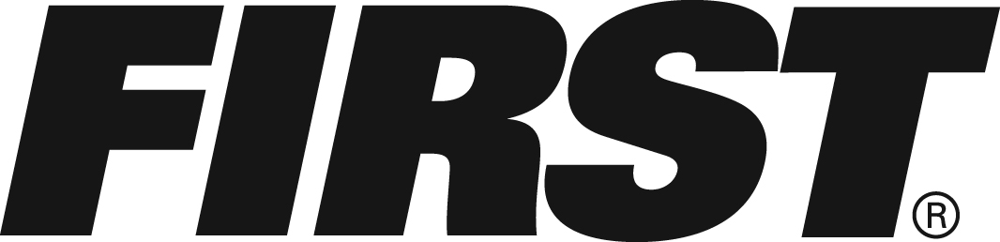
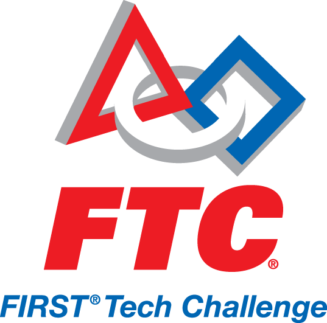

What is FIRST
What is FIRST


was founded in 1989 by Dean Kamen as a way to promote engineering, science, and technology through fun and exciting competitions. FIRST is a non-profit organization based in Manchester, New Hampshire, which fosters hands-on learning. Young people learn not only engineering and technology skills, but also self confidence, communication, and leadership through the challenges FIRST gives students all over the world.
Founding Fathers
Dean Kamen founded FIRST to get students interested in the world of science and technology. He started out as an inventor, just trying to help solve regular problems with out-of-the-box solutions. He invented many useful things such as the insulin pump, water purification systems, and the Segway PT. The idea behind his inventions was helping others, but his company did extremely well. He even says that FIRST is the invention he is most proud of.
Another playmaker of FIRST is Woodie Flowers, a mechanical engineer and the co-founder of FIRST. He is a prominent member of the FIRST community and created the Woodie Flowers Award, given to one mentor for outstanding contribution to the students on their team.
Gracious Professionalism and the FIRST Mentality
A major part of FIRST is having good sportsmanship and helping others. This is defined as Gracious Professionalism and Coopertition. Gracious Professionalism is not just an idea, but rather a way of life for all FIRST teams. Whether you are on the field, in the stands, or anywhere outside the competition environment, FIRST teams are encouraged to be kind to and supportive of everyone on their team and on others. Gracious professionals in competition are like two friends in the same race: each wants the other to succeed, but that doesn't subtract from their desire to win. Gracious professionalism involves improving society through teaching and encouraging others, as though each person is a small gear in a giant, complex, machine. Coopertition is a major part of FIRST and even some of the games. Coopertition means helping a struggling teammate. It is working with others to solve problems. It is also learning from others and respecting their opinions. By cooperating, not only is everyone happier, but they are also more productive. It takes a true leader to remain calm and encouraging while still trying to win, which is the essence of Coopertition, and why it is a core value of FIRST.

Team 100 participates in the FIRST Robotics Competition (FRC) annually. Kickoff is on the first or second Saturday of every January and is when the new challenge is released. Each year the challenge is different, and over the years, as new technology expands robot capabilities, the games get harder. Sometimes games are based on sports, but there's always a special twist.
The FRC competition experience continues to be one of the most fun and exciting events of students' high school careers. The intensity of matches grows as students feel the connection to their robot, as though it is their masterpiece - because it truly is. Students in the stands are constantly in and out of their seats cheering for their robot and dancing with other teams.
FRC is only one of the four FIRST leagues. FRC is often known as a "big brother" to all the other leagues, including FIRST Tech Challenge (FTC), FIRST LEGO League (FLL), and Junior FIRST LEGO League (Jr.FLL).
Team 100 FIRST Page
When you think of robotics and Woodside, your mind immediately jumps to Team 100. But did you know that there are two other teams at Woodside? Team 4800 (the Robocats), a 3rd year FTC team, and Team 4799 (The Odds and Ends), a 1st year FTC team, have been using Team 100’s resources, knowledge, and team members as a source for help.
FTC is designed for students in grades 7-12 to compete head to head, using a sports model. Teams are responsible for designing, building, and programming their robots to compete in an alliance format against other teams. The robot kit is reusable from year-to-year and is programmed using a variety of languages. Teams, including coaches, mentors and volunteers, are required to develop strategy and build robots based on sound engineering principles. Awards are given for the competition as well as for community outreach, design, and other real-world accomplishments.
Team 100 members also support local FTC teams by attending and volunteering at their competitions. One of Team 100's schools, Sequoia High School, hosts FTC qualifier competitions yearly. Team 100 students are eager and willing to contribute to these events by volunteering as scorekeepers, field resetters, and judges. Whether cutting aluminum in the shop, programming a manipulator, or helping out at the competitions, both teams have each other's backs.
Team 4800 FIRST PageTeam 4799 FIRST Page